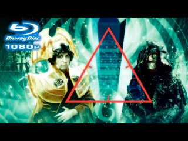
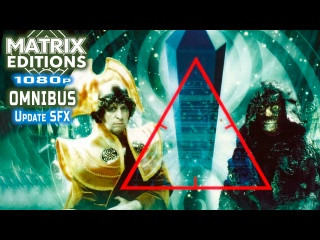
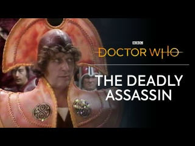
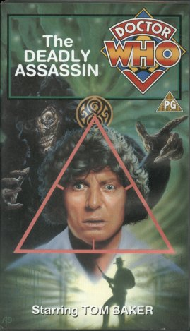
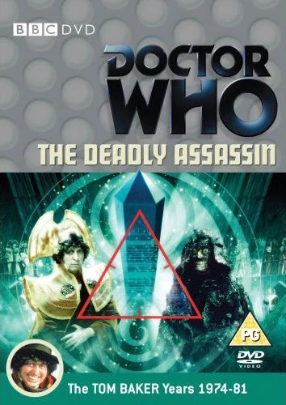
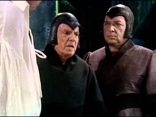

Субтитры: Русские и Английские |  |
|---|---|
с обновлением визуальных эффектов (cunningmunki) Субтитры: отсутствуют |  |
Субтитры: отсутствуют |  |
The Deadly Assassin
Дата выхода: 30 октября - 20 ноября 1976
Формат: 4 эпизода по 25 мин.
Доктор в одиночку прибывает на Галлифрей, получив предчувствие, что Президенту Повелителей Времени грозит убийство. Опоздав, он сам становится главным подозреваемым и вынужден доказывать невиновность, погружаясь в Матрицу — виртуальную реальность, хранящую знания всех умерших Повелителей Времени. Там его ждёт схватка с невидимым врагом, чья цель — не просто власть, а бессмертие. Серия без спутников — впервые в истории сериала — раскрывает устройство Галлифрея: кланы, Совет, Цитадель и предел регенераций в двенадцать тел. Возвращение Мастера в изуродованном облике задаёт один из самых мрачных сюжетов классического «Доктора Кто».
 VHS - октябрь 1991 |  DVD - 11 мая 2009 |
|---|---|
 Blu-ray - 4 мая 2020 * Версия в нашей группе |  Blu-ray - 9 ноября 2020 |

